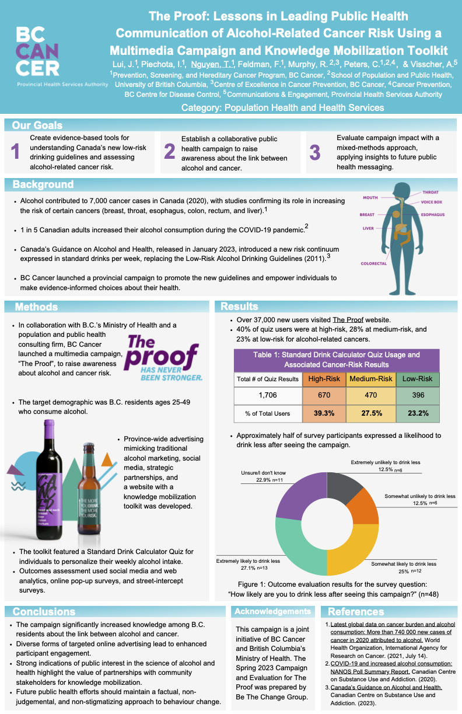

Research and Conference Posters

The Proof: Lessons in Leading Public Health Communication of Alcohol-Related Cancer Risk Using a Multimedia Campaign and Knowledge Mobilization Toolkit
A province-wide campaign designed to increase awareness of alcohol and cancer risk and support evidence-informed decision making. This project combined mass media, digital tools and partnerships to engage over 37,000 British Columbians.

Strengthening Community Relationships for Effective Cancer Prevention and Screening: A Health Promotion Community Engagement Pilot
A pilot that aimed to expand BC Cancer's reach through in-person community engagement, culturally safe workshops, and tailored health promotion activities. In its first 8 months, the initiative facilitated more than 5,000 meaningful interactions, including never-screeners and those overdue for screening, helping to reduce knowledge gaps among equity-deserving communities.